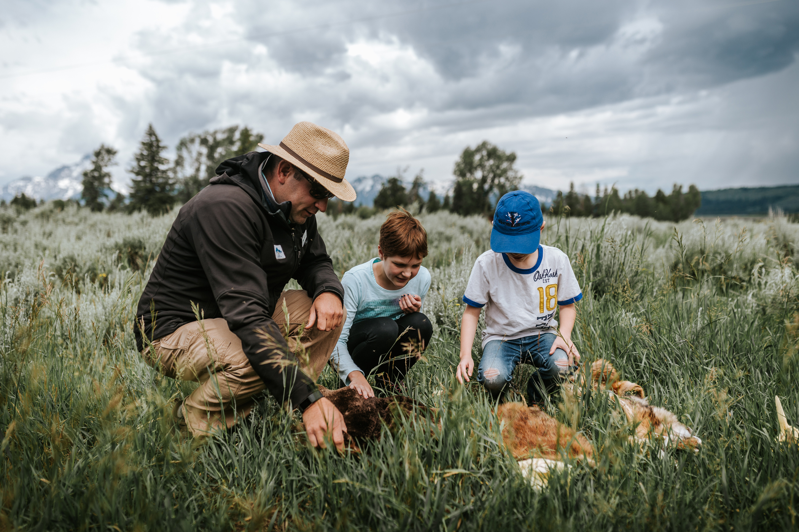

Wildlife Expeditions

"In the wilderness, we find not only beauty but also the essence of life itself."
Exploring the wild brings us closer to nature’s raw beauty and majestic creatures. From the dense rainforests of the Amazon
to the vast plains of the Serengeti, wildlife expeditions offer an unparalleled experience of observing animals in their
natural habitat.Embarking on wildlife expeditions not only immerses us in breathtaking landscapes but also provides a deeper appreciation for the delicate balance of ecosystems. These journeys reveal the incredible diversity of life, from the vibrant birds of the Galápagos Islands to the elusive tigers of India’s jungles. Each expedition is a chance to witness the wonders of nature up close, creating moments of awe and inspiration.
Beyond the thrill of adventure, wildlife expeditions play a vital role in fostering conservation efforts. By observing animals responsibly and supporting eco-tourism initiatives, travelers contribute to the protection of endangered species and their habitats. These experiences remind us of our responsibility to preserve the natural world for future generations. In every encounter, the wild offers not just beauty, but a profound connection to the Earth’s extraordinary biodiversity.
Best Wildlife Safari Destinations
- Africa:
- Serengeti National Park, Tanzania - Known for the Great Migration.
- Kruger National Park, South Africa - Home to the Big Five animals.
- Okavango Delta, Botswana - A stunning wetland ecosystem.
- Asia:
- Ranthambore National Park, India - Famous for Bengal Tigers.
- Sundarbans, India & Bangladesh - Largest mangrove forest, habitat of Royal Bengal Tigers.
- Borneo, Malaysia - Home to orangutans and pygmy elephants.
- South America:
- Amazon Rainforest, Brazil - The world’s most biodiverse ecosystem.
- Galápagos Islands, Ecuador - Unique species like giant tortoises and marine iguanas.
- Pantanal, Brazil - Best place to spot jaguars.
Wildlife Safari Comparison Table
| Destination |
Main Attractions |
Best Time to Visit |
| Serengeti National Park |
Great Migration, Lions, Elephants |
June - October |
| Amazon Rainforest |
Pink Dolphins, Jaguars, Macaws |
May - September |
| Galápagos Islands |
Giant Tortoises, Sea Lions, Iguanas |
December - May |
| Ranthambore National Park |
Bengal Tigers, Leopards, Sloth Bears |
October - June |
Wildlife Safari Packing List
- Clothing:
- Lightweight, breathable clothes
- Neutral-colored outfits for blending in
- Comfortable hiking boots
- Gear:
- Binoculars for wildlife spotting
- Camera with a zoom lens
- Guidebook or wildlife field manual
- Safety Essentials:
- First-aid kit
- Bug repellent and sunscreen
- Travel insurance
Wildlife Exploration
- Tracking Elusive Species:
- Embark on thrilling expeditions to observe snow leopards in the Himalayas or jaguars in the Amazon.
- These ventures require skilled guides, rugged terrains, and patience to spot majestic creatures.
- Exploring Biodiversity Hotspots:
- Immerse yourself in the Amazon Rainforest or Madagascar, home to rare species like lemurs and vibrant birds.
- These locations play a crucial role in understanding and preserving global biodiversity.
- Night Safaris:
- Experience nocturnal wildlife by spotting owls, foxes, and leopards during guided night safaris.
- Equipped with spotlights and a quiet demeanor, these adventures reveal an active nighttime world.
Conservation-Focused Expeditions
- Participating in Conservation Projects:
- Join initiatives like habitat restoration, wildlife monitoring, or coral reef rehabilitation.
- Directly contribute to preserving ecosystems and species during expeditions.
- Anti-Poaching Efforts:
- Learn about anti-poaching programs that utilize patrols and technology-driven surveillance.
- Support efforts that protect endangered species and maintain ecological balance.
- Supporting Local Communities:
- Engage in eco-tourism by choosing locally operated expeditions.
- Support sustainable practices and community-driven conservation efforts.
- Help create a balance that benefits both wildlife and local people.
Photography Expeditions
- Capturing Iconic Wildlife Moments:
- Use long lenses for close-ups of big cats.
- Set rapid shutter speeds for birds in flight.
- Take wide-angle shots to capture marine life in its habitat.
- Master patience, timing, and animal behavior for the best shots.
- Best Gear for Wildlife Photography:
- Invest in a DSLR or mirrorless camera with telephoto lenses (e.g., 100-400mm).
- Use a sturdy tripod for stability.
- Carry weatherproof gear for harsh environments.
- Pack extra batteries and memory cards for remote expeditions.
- Ethical Wildlife Photography:
- Maintain a safe distance to avoid disturbing wildlife.
- Avoid disruptive behaviors that alter animal actions.
- Minimize environmental impact while shooting.
- Ensure your presence does not alter animals’ natural behavior.
Adventure Wildlife Expeditions
- Kayaking Through Mangroves:
- Paddle through serene mangrove forests for a peaceful experience.
- Observe aquatic species like manatees, mudskippers, and crabs.
- Experience the rich biodiversity of these unique coastal ecosystems.
- Trekking in Remote Regions:
- Explore isolated wilderness areas for a raw adventure.
- Encounter rare species like snow leopards, red pandas, or orangutans.
- Combine adventure with wildlife discovery in untouched regions.
- Exploring Underwater Ecosystems:
- Dive into vibrant underwater worlds through scuba diving expeditions.
- Encounter coral reefs, colorful marine life, and shipwrecks.
- Contribute to marine conservation efforts while exploring.
Educational Wildlife Tours
- Understanding Animal Behavior:
- Guided tours provide expert insights into animal behavior.
- Learn about ecosystem dynamics and species interactions.
- Gain a deeper appreciation of ecological connections.
- Learning About Endangered Species:
- Discover the plight and habitats of endangered species.
- Understand the causes of population decline and threats.
- Support conservation efforts through awareness and education.
- Workshops on Wildlife Tracking:
- Participate in tracking workshops led by experienced guides.
- Learn to identify animal signs, footprints, and markings.
- Deepen your understanding of wildlife movement and habitats.
Family-Friendly Wildlife Trips
- Kid-Friendly Safaris:
- Introduce children to wildlife wonders through interactive experiences.
- Ensure safe environments designed specifically for young explorers.
- Enjoy age-appropriate activities such as storytelling and guided tours.
- Interactive Wildlife Parks:
- Visit sanctuaries and parks offering close-up animal encounters.
- Participate in feeding experiences with friendly wildlife.
- Engage in educational programs designed for families.
- Tips for Family Adventures:
- Choose destinations with family-friendly activities and facilities.
- Ensure safety and comfort with proper planning and precautions.
- Incorporate fun and educational elements to create lasting memories.
Key Aspects of Wildlife Expeditions
| Category |
Details |
| Popular Destinations |
Amazon Rainforest, Serengeti National Park, Himalayas, Galápagos Islands. |
| Focus Areas |
Tracking elusive species, birdwatching, marine life exploration. |
| Conservation Efforts |
Habitat restoration, anti-poaching patrols, eco-tourism initiatives. |
| Activities |
Night safaris, trekking, kayaking, wildlife photography. |
| Recommended Gear |
Binoculars, camera with telephoto lens, field guide, sturdy footwear. |
| Ideal Seasons |
Dry season for African safaris, breeding seasons for migratory birds. |
| Safety Measures |
Follow guide instructions, maintain distance from wildlife, stay hydrated. |
| Educational Benefits |
Learn animal behavior, understand ecosystems, and support local conservation efforts. |
Conclusion
Wildlife expeditions offer a unique opportunity to connect with nature, explore the untamed beauty of remote ecosystems, and observe fascinating species in their natural habitats. These journeys often involve thrilling activities like tracking elusive predators, trekking through dense forests, and diving into vibrant underwater worlds. For enthusiasts, wildlife expeditions provide insights into animal behavior, ecological balance, and the fragility of biodiversity hotspots. Moreover, they are a platform to witness firsthand the importance of conservation efforts and sustainable practices that protect endangered species and habitats.
Such expeditions not only foster an appreciation for the planet's rich biodiversity but also enable meaningful contributions toward its preservation. From participating in habitat restoration projects to engaging in eco-tourism, individuals can actively support conservation initiatives. Whether through photography, educational tours, or adrenaline-filled adventures, these experiences inspire respect for nature and emphasize the interconnectedness of all living beings.
In conclusion, wildlife expeditions are not just explorations—they are powerful reminders of our role in safeguarding the environment. By nurturing a deeper connection to wildlife and contributing to conservation efforts, these journeys ensure the preservation of our planet's natural wonders for generations to come. Let me know if you’d like to explore more about this topic or specific expeditions!🌿🐾